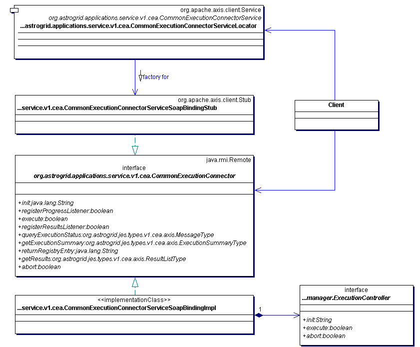
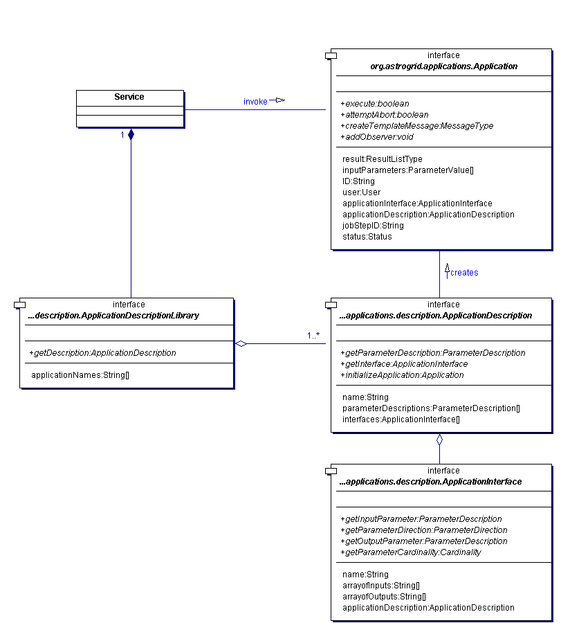
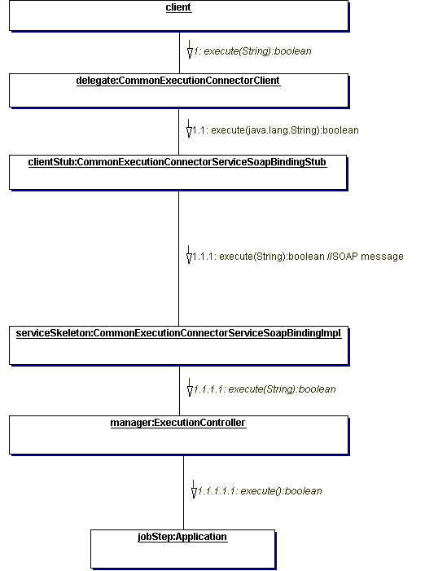

The CEA grew out of a need to wrap command-line applications as web services. It has evolved to become the main part of AstroGrid's service architecture. Currently, the CEA affects the data-selection services; the data-transformation services; the workflow system; the portal; but not the MySpace, Filestore or Registry sub-systems.
CEA allows the Workflow system in AstroGrid, consisting in the workflow-preparation tools in the portal and the workflow executor in the JES sub-system, to drive all data-selection and data-transformation services without needing special code for each kind of service. It achieves this by factoring the special features of each service in a description system and leaving a common part that is uniform across all services.CEA treats all "business logic" in AstroGrid as something to be executed in a job-step within a workflow. A job-step has
The application can be a set of Java classes, an executable file or an on-line service. In each case, the application is wrapped in a CEA-compliant service.
In short, a job-step is like a minature batch-job, and all CEA-compliant services are batch processors. Under this scheme, all CEA services have the same interface and are easy to call from JES. The details of the operations to be performed in the application are sent by JES as parameters of calls to the services.
CEA-compliant services have a standard interface,defined in both Java and in a matching WSDL-contract. The operations in the interface are to do with job-steps.
Service-definition interfaces for a CEA service (q.v. detailed description)
The service-definition interface is realized in a set of classes
generated by Axis tooling. These follow the normal Axis patterns. The
ExecutionController interface is not generated by Axis but must be
provided as hand-coded Java. This interface is a potential viariation
point for service implementors but, in practice, a single, simple
implementation works for all services.

Classes generated by Axis from CEA interfaces (q.v. detailed description).
Inside the service, another set of interfaces are used to set up the business logic for the job-step.

Application-description interfaces inside a CEA service (q.v. detailed description)
These application-description interfaces are used to generate an Application object that represents the job-step from a library describing the formal parameters of an application.
The invocation of the job-step is split between two web-service operations. The init operation sets up the job-step by creating the Application object within the service. The execute operation sets the Application running and returns immediately.
Invocation of the init operation (q.v. detailed description).

Invocation of execute (q.v. detailed description).
Note that the calls to the Application are synchronous, but the execution of the job-step is asynchronous. The Application, therefore, must handle the threading and state-holding aspects of the job-step.
Application is an interface to be implemented in CEA-compliant services. It is the primary variation-point for authors of services. The Application implementations deployed to date cover execution of the application in a sub-process and execution of Java calss in a thread within the service's JVM.